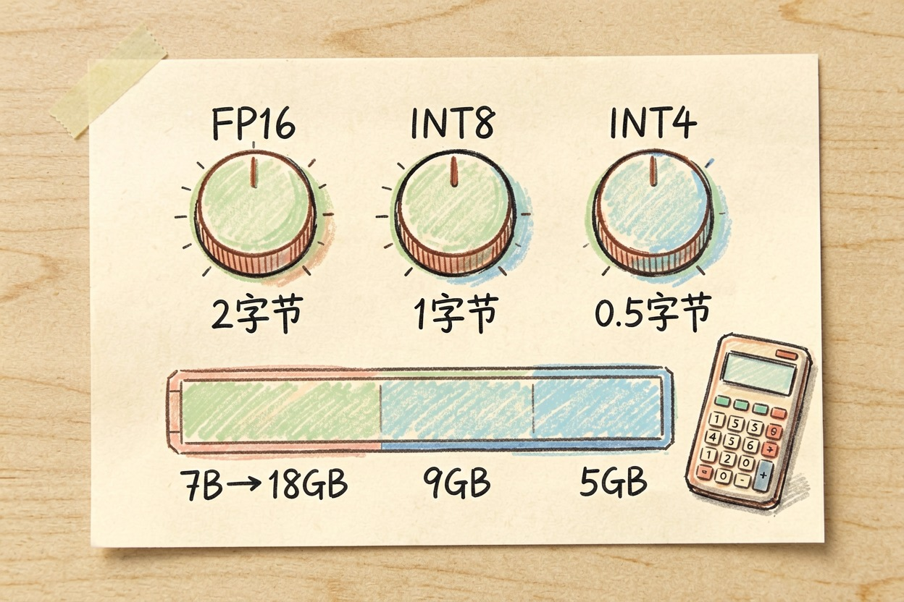
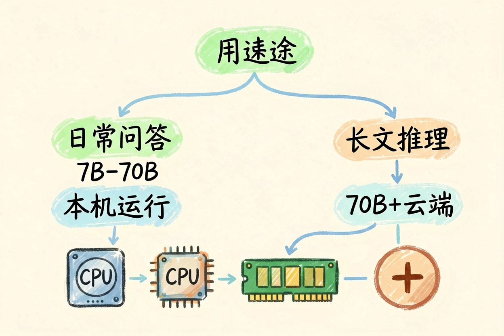

7B、70B 是什么意思？模型参数量该怎么读懂 — Learntide
B 就是十亿，7B 即七十亿个参数。数字大通常更强，但吃显存也更狠。挑模型别只盯着这一个数看。
模型参数量是什么意思：B 就是十亿这个单位
模型参数量是什么意思？7B 里的 B 是英文 billion，十亿的意思。7B 就是七十亿个参数，70B 是七百亿。参数是模型内部那些可调的数值，训练时被一点点改出来。
可以把参数想成一台机器上的旋钮。旋钮越多，能拟合的花样越多，容量上限越高。它是规模的粗标尺，不是能力证书。
参数量决定什么，又不决定什么
参数多了，能记住的细节更多，处理复杂任务更从容。这点是真的。
但它管的只是上限。同一档参数，训练语料干不干净、指令训练做得细不细，差别能拉得很开。有些七十亿的模型在中文任务上比几百亿的还稳，就是这个原因。想知道这些差别从哪一步来，可以回头看训练流程那篇。
还有一类情况容易看走眼。混合专家架构会标一个很大的总参数，实际每次只激活其中一小部分。看到几千亿的标称值，先分清是总量还是激活量。
参数量怎么换算成显存和速度

想本地跑，最直接的问题是显存够不够。有个很糙但够用的算法：显存需求约等于参数量乘以每个参数占的字节数，再留三成余量给对话内容和系统开销。
显存(GB) ≈ 参数量(B) × 每参数字节数 × 1.3
FP16 每参数 2 字节： 7B × 2 × 1.3 ≈ 18 GB
INT8 每参数 1 字节： 7B × 1 × 1.3 ≈ 9 GB
INT4 每参数 0.5 字节：7B × 0.5 × 1.3 ≈ 5 GB速度也跟着参数走。参数越多，每生成一个字要过的计算量越大，回答就越慢。云端调用把这层挡住了，但账单会替你感受到。
同样是 7B，差距可能很大
两个都标 7B 的模型，实际体验可能差一个档次。差别来自三处：训练语料的质量和语种配比、指令数据的打磨程度、有没有针对性做过推理增强。
参数量还和量化档位绑在一起。同一个 70B，跑在四位精度下和跑在半精度下，占的显存差好几倍，回答质量也会有肉眼可见的落差。看模型卡时，参数量和精度要一起看。
蒸馏出来的小模型是另一条路。用大模型的输出去教小模型，参数少很多，特定任务上却能接近大的水平。所以看到一个小体积模型跑分很高，先看它是不是被这么教出来的。
怎么挑：先说清用途，别先看数字

挑模型的顺序应该反过来：先想清楚要它干什么，再回头看哪一档够用。
日常问答、改错别字、整理格式，几十亿参数这一档在本机就跑得动，响应也快。要写长文、做多步推理、处理专业材料，就得往上走一两档，或者干脆用云端服务。
预算和硬件是硬约束。显存不够硬塞大模型，结果是慢到没法用，还不如选小一档再配好提示词。
最后提醒一句，别把参数量当成排行榜名次。厂商愿意公布这个数，是因为它好懂又好比。真正影响体验的东西，很多都写不进这一个数字里。搞懂模型参数量是什么意思，是为了不被它牵着走。
本文信息核对于 2026-08-08。AI 产品的价格、免费额度与功能变动频繁，实际以各工具官网当前说明为准。